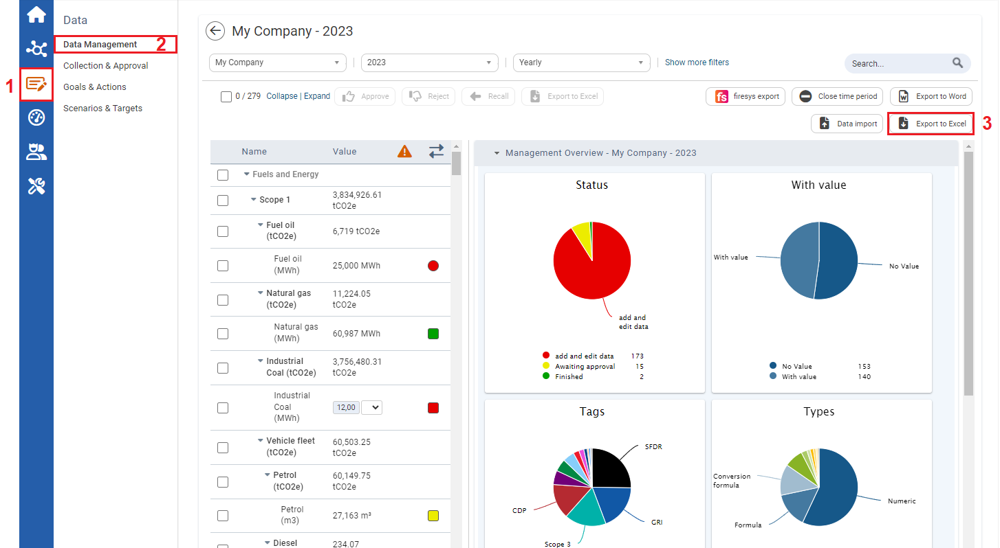
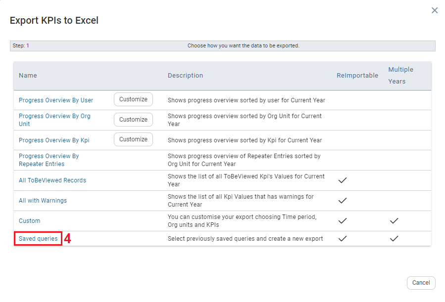
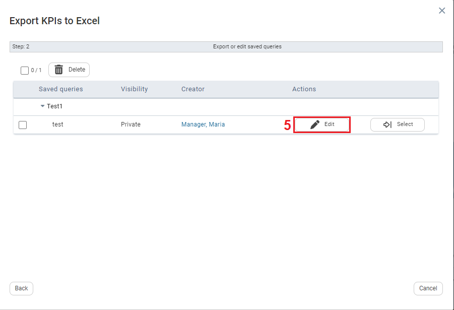
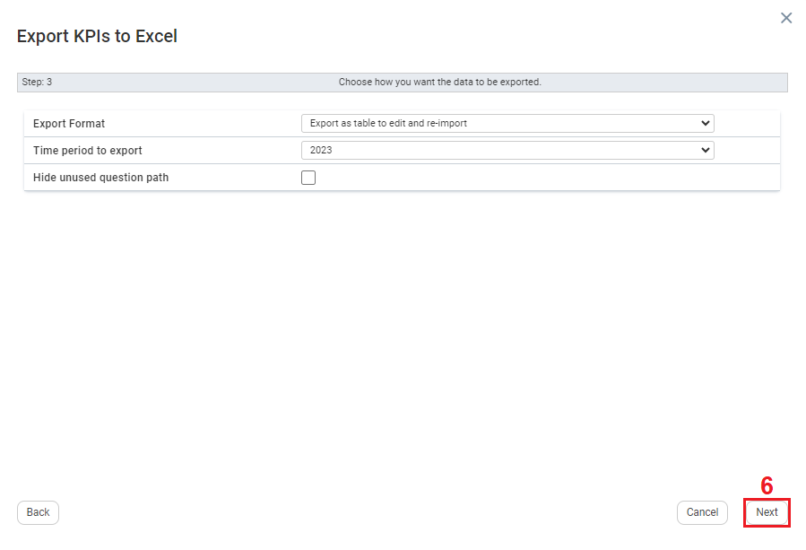
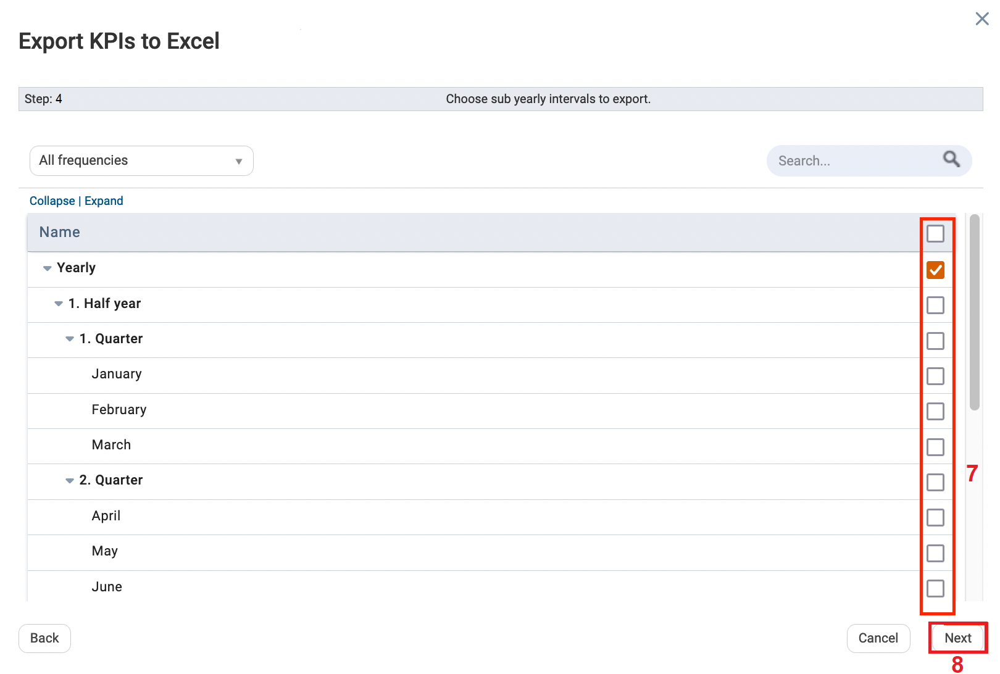
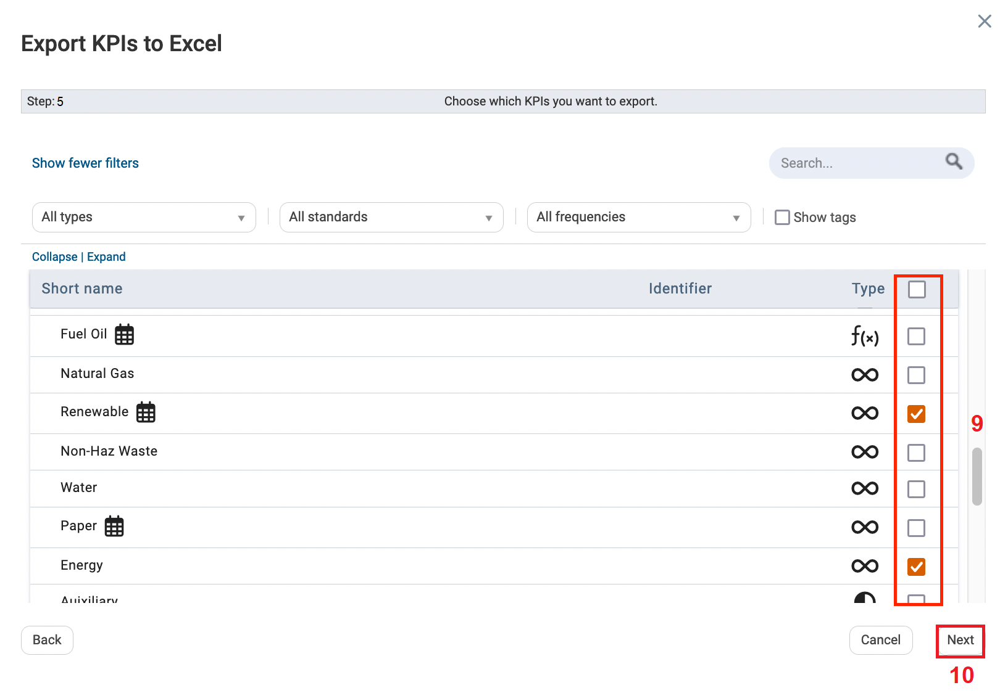
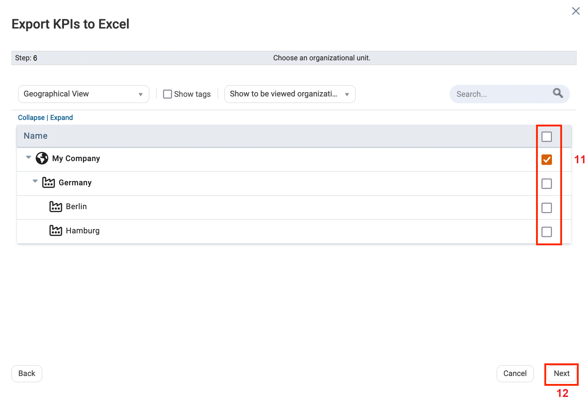
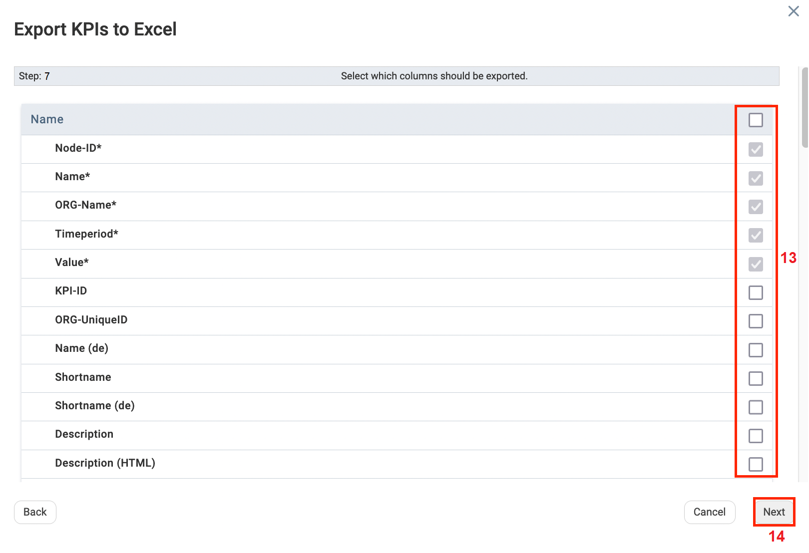
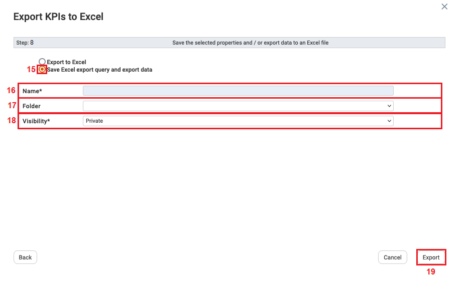
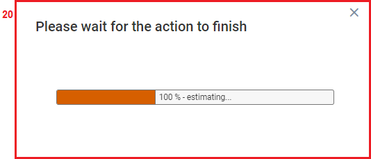

To Edit Saved Queries

| 1 | On the Left navigational panel, click Data. |
| 2 | Click Data Management. |
| 3 | Click Export to Excel. The Export KPIs to Excel window opens. |

| 4 | Click Saved Queries. |

| 5 | Click Edit. |

| 6 | Click Next. |

| 7 | Select a sub-yearly interval to export. |
| 8 | Click Next. |

| 9 | Select the KPIs to export to Excel. |
| 10 | Click Next. |

| 11 | Select an Organizational Unit. |
| 12 | Click Next. |

| 13 | Select Columns that you want exported to your export queries. |
| 14 | Click Next. |

| 15 | Click Save Excel export query and export data. |
| 16 | Fill in the Name textbox. |
| 17 | Click the Folder dropdown textbox and select an existing folder name or click Other. If Other is selected the Folder textbox allows you to type in a folder name. |
| 18 | Click the Visibility textbox and select who you would like to grant visibility for the exported excel query and data.
|
| 19 | Once Visibility is selected, click Export. |

| 20 | A prompt displays, “Please wait for the action to finish”. Once the download bar on the prompt reaches 100% in terms of downloading the exported excel query, the prompt disappears. The Excel query and data are exported. |